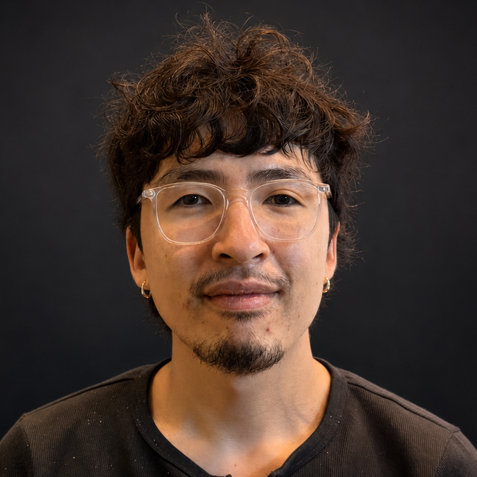

Phongsakon (พงสกร) Mark Konrad
Thai Nickname: เฟิร์ส (First)
Born in อุทัยธานี (Uthai Thani), Thailand, on 21 July 1997. Moved to Germany in 2009, then to Denmark in 2022.
I am an incoming MSc Machine Learning student at the University of Tübingen (Oct 2026), with a background in empirical machine-learning research and research engineering. I am a Research Collaborator with the Applied and Interpretable Machine Learning group at the University of Southern Denmark and a Research Collaborator with the DataVISards visualisation group at the Hong Kong University of Science and Technology (HKUST), where I spent a 2025 exchange semester in Hong Kong. At SDU I also served as a TA for Artificial Intelligence and built an interactive learning platform for the course. My research interests are deep learning theory and the mechanics of learning: understanding deep learning models deeply, particularly how optimization shapes learning dynamics and the representations neural networks learn.
See also my full CV.

| Oct 2026 | Will begin the two-year MSc in Machine Learning at the University of Tübingen. |
| Aug 2026 | Challenges in Deep Learning-Based Small Organ Segmentation accepted to Biomedical Signal Processing and Control. |
| Jul 2026 | Three papers appeared at ICML 2026 workshops, including an oral at the Philosophy of Machine Learning Workshop and two posters at the Mechanistic Interpretability Workshop. |
| Jun 2026 | Admitted to graduate programmes at Cambridge, Tübingen, and Copenhagen; chose Tübingen's research-oriented, two-year MSc. |
| Jun 2026 | Software Engineering programme thesis, Heimdall: Only the Safe Shall Pass, selected as best in the cohort of more than 100 students. |
| May 2026 | Received support from the William Demant Foundation for graduate study. |
| Jan 2026 | Continued collaboration with the DataVISards group at HKUST after an exchange semester in Hong Kong. |
(Grouped into Preprint, Published (Conference / Journal), Workshop, and Thesis. Bold titles, bolded venues, my name underlined.)
Routing Subspaces: Auditing Evaluation-to-Deployment Mismatch in Fine-Tuned Language Models
The Open-Box Fallacy: Why AI Deployment Needs a Calibrated Verification Regime
Challenges in Deep Learning-Based Small Organ Segmentation: A Benchmarking Perspective for Medical Research with Limited Datasets
Fact-Check Your Information (FYI): A Design Probe to Understand How People Actually Fact-Check Data-Driven Articles
Beyond Major Floods: Deep Learning for Detecting Shallow Water Inundation in Agricultural Areas
Self-Reports Do Not Identify Self-Models: An Identifiability Test for Counterfactual Reports
Decoded but Unused: Instruction Tuning Routes Moral Framing into the Judgment Readout
A Path Already Walked: On Inheriting Network-Neuroscience Tools for Mechanistic Interpretability
Architecture Without Architects: How AI Coding Agents Shape Software Architecture
CAKE: Cloud Architecture Knowledge Evaluation of Large Language Models
A Reference Architecture for Agentic Hybrid Retrieval in Dataset Search
Heimdall: Only the Safe Shall Pass
| Jun 2026 | Best BSc Thesis in Cohort — awarded by the University of Southern Denmark for the thesis Heimdall: Only the Safe Shall Pass, selected as best among more than 100 students in the Software Engineering programme. |
| May 2026 | Graduate Study Grant — awarded by the William Demant Foundation in support of MSc Machine Learning at the University of Tübingen. |
| 2026 | Best Startup Award Finalist, DreamBear — finalist at SDU Startup Night; one of five startups selected to pitch. |
| 2025 | Top 10, Danish National Championship in AI — competing solo against 50+ teams from across Denmark (mostly master's students), organised by the Danish Society for Artificial Intelligence. |
| 2024 | Top 10, Danish National Championship in AI — competing in a small team against 50+ teams from across Denmark (mostly master's students), organised by the Danish Society for Artificial Intelligence. |
| 2023 | 1st Place, SDU Case Competition — 48-hour case competition on sustainability with real-world cases from Danfoss, Linak, and partner companies, awarded 1st place at SDU Sønderborg. |
| 2021 | Formal Recognition for Exemplary Service — commended by the Bundeswehr (German Armed Forces) for setting a benchmark in dedication and professionalism for enlisted personnel, during service as an HR team lead for more than 600 soldiers. |
| 2021 | Performance Bonus for Outstanding Achievement — awarded a financial bonus by the Bundeswehr (German Armed Forces) for sustained excellence and independent handling of complex tasks, during service as an HR team lead for more than 600 soldiers. |
戦わなければ、勝てない。
If you don't fight, you can't win.
— Eren Yeager
The fight is deep learning theory — understanding how optimization, data, and architecture shape what a network learns and why. We don't win by guessing; we win by opening the black box.
Page layout adapted from jonbarron.info (template at jonbarron/jonbarron.github.io), used with thanks.
Last updated 19 August 2026.